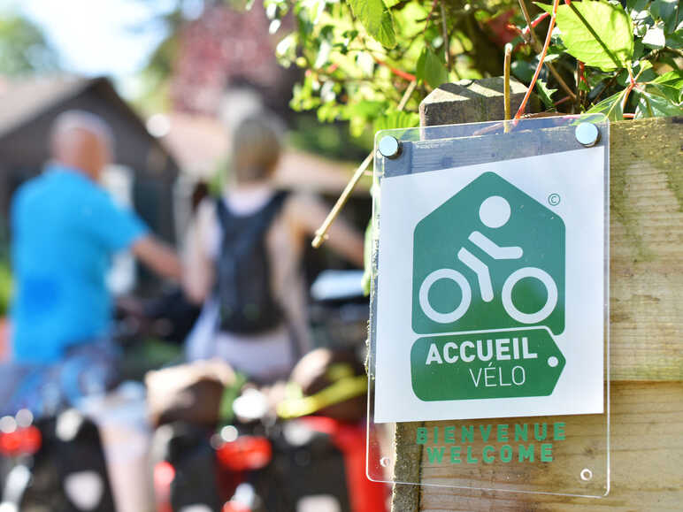

Pourquoi devenir Accueil Vélo ?
- Améliorer votre visibilité auprès des touristes à vélo et des agences de voyages spécialisées vélo
- Présence sur les différents supports de l'Eurovélo 5 (web et papier)
- Référencement possible dans les topoguides vélos
- Devenir acteur d'une dynamique en pleine croissance et entrer dans un réseau local et national de prestataires